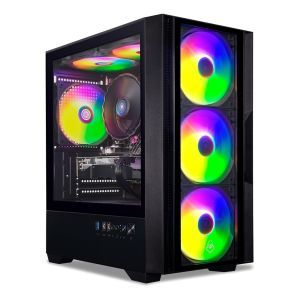

Conheça o PC Gamer Ares XII, equipado com um processador Intel i5-14400F e 16GB de memória RAM. Este computador gamer entrega desempenho excepcional para jogos avançados e tarefas exigentes. Além disso, sua alta capacidade de memória RAM garante uma multitarefa suave e eficiente. Com um SSD M.2 480GB fornece tempos de inicialização extremamente rápidos, permitindo que você inicie suas partidas sem atrasos. Seu design robusto e contemporâneo adiciona um toque de elegância ao seu setup, enquanto o eficaz sistema de resfriamento mantém o computador em temperatura ideal durante sessões intensas de jogo. Equipado com uma Radeon RX 7650 GRE 8GB ainda oferece gráficos deslumbrantes e velocidade incríveis, proporcionando uma experiência de jogo totalmente imersiva e envolvente. Conheça mais detalhes sobre este incrível computador gamer abaixo: Este computador já inclui ventoinha em sua configuração. Computador enviado montado e certificado Os computadores serão montados. Acompanham BIOS e Drivers atualizados. Todos os cabos são posicionados pela parte traseira do gabinete dando uma aparência mais limpa ao computador. São enviadas todas as caixas e acessórios presentes nos equipamentos. Embalado com caixa de papelão de ondas duplas exclusiva da e fitas de segurança com cola quimicamente ativa. A garantia é por peça, o prazo será indicado na nota fiscal. Os computadores não acompanham lacre, portanto poderá abrir seu gabinete e modificar da forma que desejar.